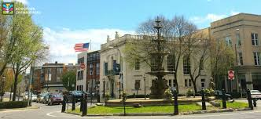

Chambursburg, The Place I call Home
I lived in Chambursburg till the start of Second grade summer. I went to a school called Falling Springs, and I made a ton of friends. I liked my teachers and my classmates.
Then one day I figured out we were to start packing to move, and I was shcoked. Leaving my friends behind was hard, but we moved and I found more amazing friends went to a school District called South Middleton. I now am glad we moved and that I was lucky to find more friends. I also play soccer and have been since I've been able to.